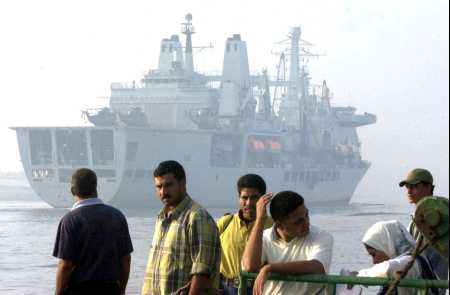

Pierre Grenier, 20 Septembre 2001, 13h40

SI, si seulement un nombre signifiant de personnages importants pouvaient laisser entrevoir l'amorce du bout de la queue d'une pareille prise de conscience, je serais presque un peu rassuré.Dubbiah nous a donné une autre belle raison d'être effarés aujourd'hui. Le simple nom de son opération militaire est un appel à une réplique fanatique justifiée par un sentiment de légitimité à toute épreuve: "justice infinie".
Comme les événements qui y ont mené, ce nom est tellement énorme et caricatural qu'on n'y aurait pas cru si des scénaristes d'Hollywood l'avaient incluse dans un de leurs navets patriotico-mochetons.
Pierre
Note: Réponse à La GRANDE MAJORITE.